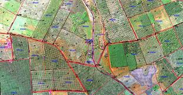
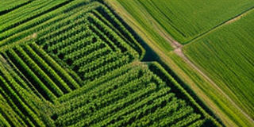
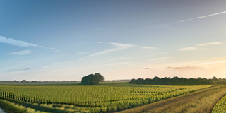
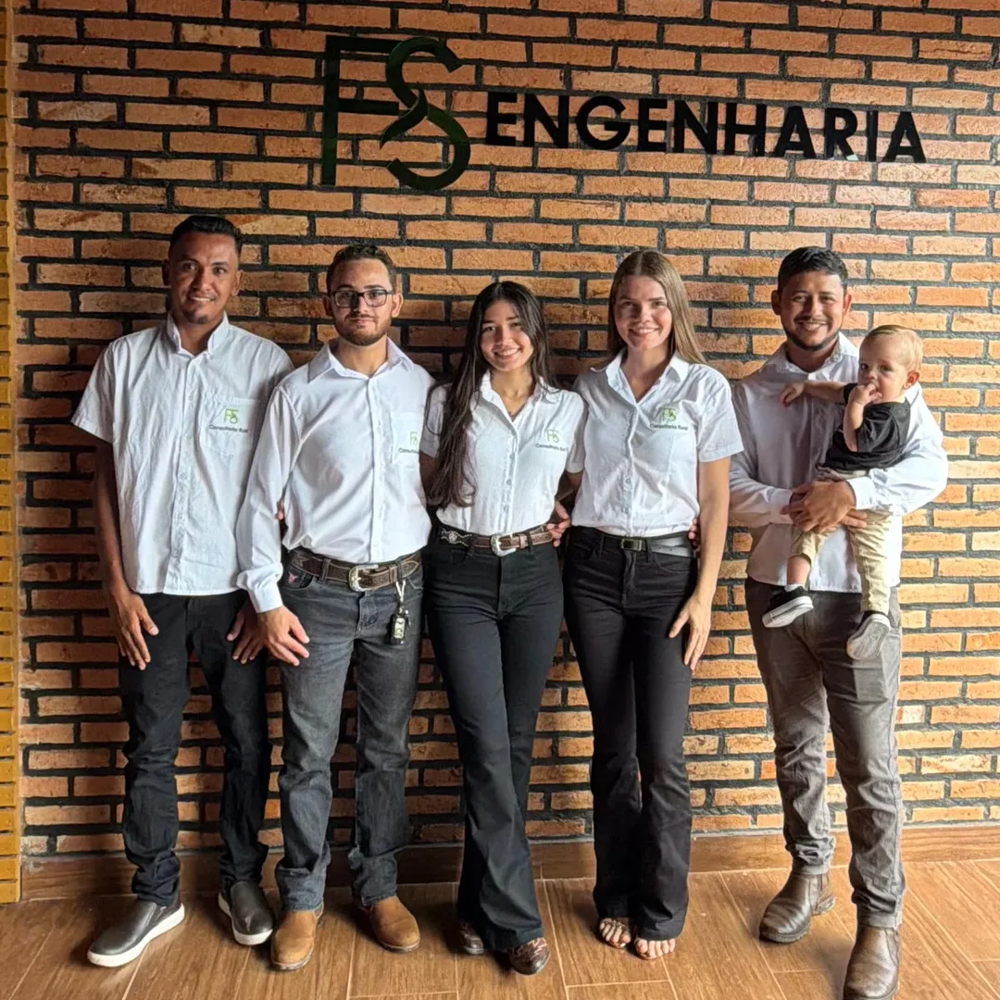
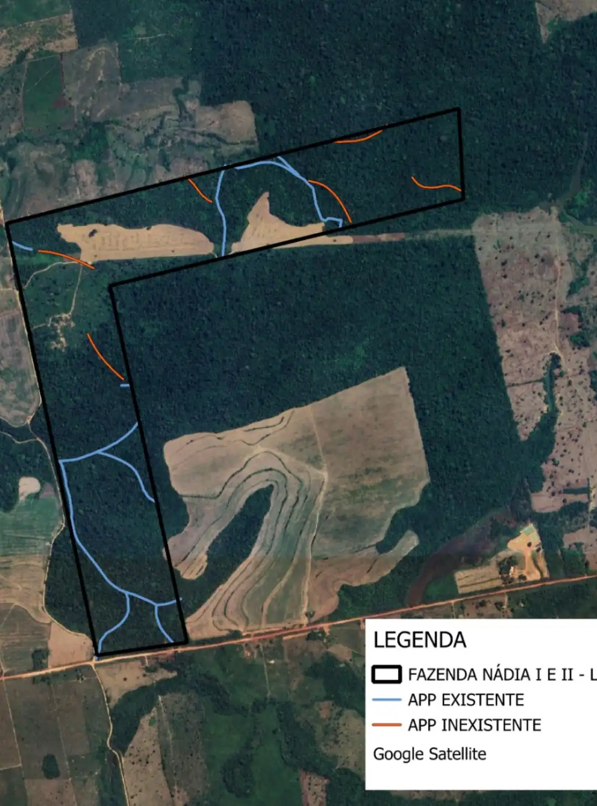
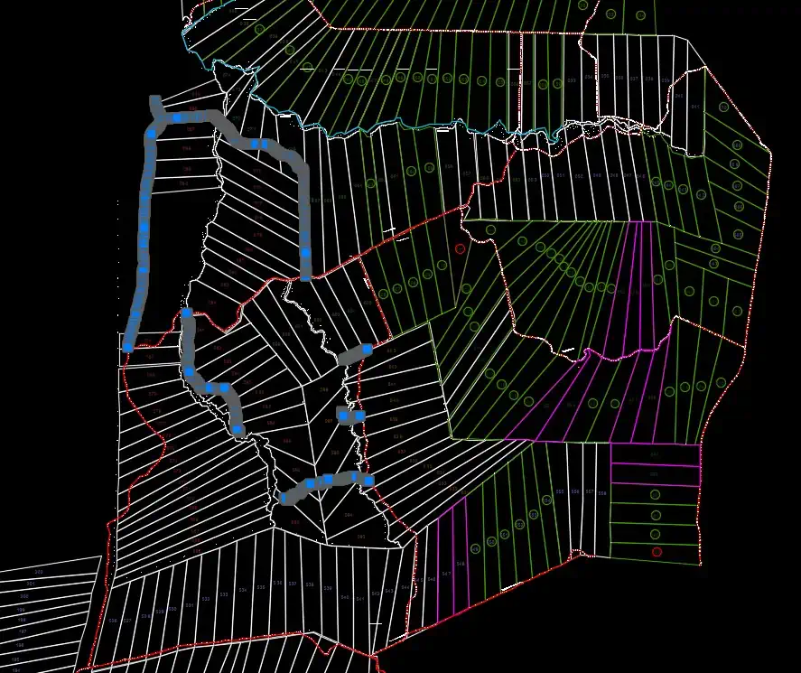
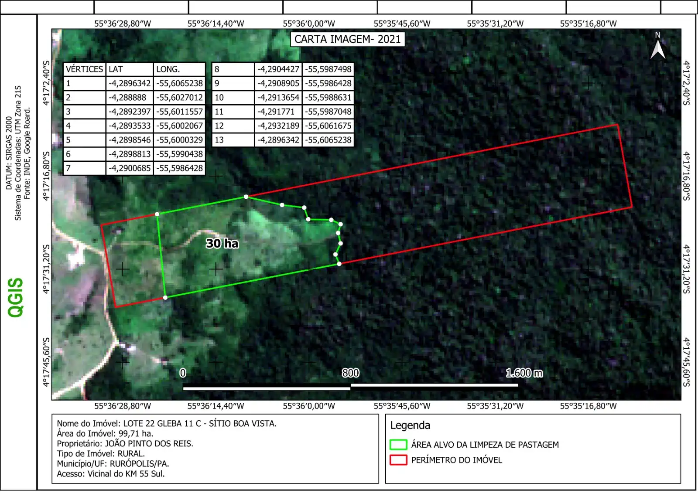

Missão
Oferecer consultoria rural estratégica e sustentável, promovendo o desenvolvimento das propriedades e fortalecendo a competitividade dos produtores, com respeito às pessoas e ao meio ambiente.
A FS Engenharia é uma empresa especializada em consultoria rural, com atuação estratégica no oeste do Pará. Atuamos junto a agricultores familiares, médios e grandes produtores, oferecendo suporte técnico qualificado para promover segurança, regularidade e sustentabilidade às propriedades rurais, alinhando conhecimento técnico às necessidades de cada realidade no campo.
Com planejamento técnico sólido, oferecemos soluções para crédito rural, regularização fundiária e ambiental, além de assistência técnica em agricultura e pecuária, garantindo eficiência e segurança em cada etapa.
Nosso foco está em apoiar decisões estratégicas, aumentar a produtividade e impulsionar o crescimento sustentável no campo, sempre com transparência, responsabilidade social e compromisso com resultados concretos e duradouros para nossos clientes.
Ao longo de nossa atuação, consolidamos uma relação de confiança com produtores e parceiros, baseada na proximidade, no conhecimento técnico aplicado à realidade do campo e na busca constante por soluções eficientes, contribuindo para o fortalecimento das propriedades e o desenvolvimento da região.
Oferecer consultoria rural estratégica e sustentável, promovendo o desenvolvimento das propriedades e fortalecendo a competitividade dos produtores, com respeito às pessoas e ao meio ambiente.
Atuamos com ética, comprometimento e responsabilidade socioambiental, valorizando as pessoas e o trabalho em parceria. Acreditamos na inovação, no planejamento técnico e na transparência como pilares para gerar confiança e resultados consistentes no campo.
Ser referência nacional em consultoria rural, reconhecida pela excelência técnica, inovação e compromisso com resultados sustentáveis, contribuindo para o fortalecimento do agronegócio e o desenvolvimento das propriedades rurais.
A FS Engenharia nasceu com o propósito de transformar desafios do campo em oportunidades de crescimento sustentável. Atuando estrategicamente no oeste do Pará, construímos nossa trajetória ao lado de produtores rurais que buscam segurança, regularização e desenvolvimento estruturado para suas propriedades.
Somos uma equipe técnica comprometida com a excelência, unindo conhecimento em engenharia, legislação rural, gestão produtiva e planejamento estratégico. Nosso trabalho vai além da consultoria: oferecemos direcionamento claro, embasado e responsável para decisões que impactam diretamente o presente e o futuro do produtor.
Acreditamos que o crescimento no campo deve acontecer com base em planejamento sólido, responsabilidade ambiental e acesso estruturado a recursos. Por isso, atuamos de forma próxima e personalizada, entendendo a realidade de cada cliente e propondo soluções que respeitam suas particularidades e objetivos.
FS Engenharia possui mais de 4 anos de experiência no setor, atuando com excelência em topografia, consultoria técnica e apoio especializado para acesso ao crédito rural. Com uma equipe capacitada e conhecimento do campo, ajudamos produtores a conquistar recursos e a tomar decisões seguras para o crescimento sustentável de suas propriedades.
Fale com um especialista
Levantamento topográfico preciso para certificação de imóveis rurais junto aos órgãos competentes, atendendo às exigências do Incra.
Elaboração de projetos técnicos para acesso a linhas de crédito rural, fomentando o crescimento sustentável da produção agropecuária.

Serviços de medição, levantamento planialtimétrico e demarcação de terrenos, essenciais para planejamento e gestão rural eficiente.

Regularização fundiária completa com foco na legalização de imóveis rurais e acesso às políticas públicas de desenvolvimento do campo.

A FS Engenharia Rural conta com uma equipe de engenheiros, agrimensores e técnicos especializados, com sólida atuação no campo e foco em soluções eficientes e sustentáveis.


